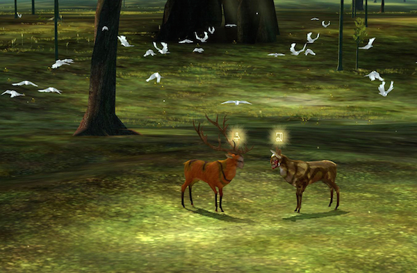

This is an evaluation of MilkDrop, which I discovered via an Instructables article by deathfromabove titled Music Visualizer for Live Performances. The image is a screenshot I took of a video included by the author in the how-to article.
I like the visual style of this particular portion of the screenshot much more than screencaps I saw elsewhere. Those struck me as being of the "classic" somewhat-psychedelic-looking early 2000's music visualizer sort which I associate with the default media player on my first PC growing up. Not the look I'm going for. The content here is that of abstracted "visualizations" driven by the sound input from a recorded file or mic. I assume the intent is to look cool, but having grown up with such things available, I think it no longer pushes the envelope! The target audience is in some ways similar to my own. People in a nightclub environment, at a music festival, or in a museum. Anywhere where music can be interacted with. In terms of technical perfection, however, MilkDrop blends its visualizations seamlessly, a feat I am not sure I will be able to achieve. However, as far as I have looked, it has little to no interface. At most, 12 buttons comparable to a numeric keypad. I think I will be able to inputrove upon that element, as well as customize the visualization I produce. Finally, the interaction is limited, coming only via an audio channel. This means that the music-maker or player has all control over the output. My second comparable project is quite different in this sense.
This is an evaluation of The Endless Forest which I rediscovered via an article on the Creative Applications site. The image is an in-game screenshot taken by the creators of the "game", Auriea Harvey and Michaël Samyn.
In contrast with MilkDrop, both the players of this game AND its creators can interact virtual-physically in its environment. During events titled Abiogenesis. Auriea and Michaël can “play god” in the digital environment. Players gather, dance, chase, and communicate without words while the game creators play unique music, summon beautiful and bizarre objects, and bestow in-game gifts. There is no music visualizer per say, except for the actions of the creators and audience. I would claim that this is, in fact, the original music “visualizer” - human dance and interaction. The interface however, is still limited, though it does allow both creator and listener to connect. Given the intent of The Endless Forest, there is no verbal communication, only set actions users can combine to move their deer-avatars in ways interpreted differently by every other user. Playing TEF as a teen, it was fascinating to see the ways in which my fellow players would interact within and outside of the game, weaving together meaning from a limited palette of interactions. It was both a delightful and frustrating experience, and I would like to maintain that sense of play in my own project.